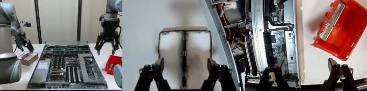

Profile

Fabricio Giusti Oliveira Monteiro
I am a Mechanical Engineering student at Purdue University focused on robotics, automation, and bringing machine learning into physical systems. My work spans the full stack of a robot — from CAD and hands-on hardware bring-up to data pipelines, model training, and autonomous deployment.
Most recently I was a Robotics Engineer Intern at EmbodyX, where I owned the imitation-learning pipeline for a dual-arm robot end to end — teleoperation, data collection, Vision-Language-Action model fine-tuning, and on-robot deployment. I am also an Undergraduate Research Assistant at Purdue’s ACAI Lab, and I co-founded the Boiler Soccer Robot Association to compete in the RoboCup Humanoid League.
| University | Purdue University, College of Engineering, West Lafayette, IN |
| Degree | Bachelor of Science in Mechanical Engineering |
| Minor | Global Engineering Studies (GEARE Program) |
| GPA | 3.91 / 4.0, Dean’s List every semester |
| Expected Graduation | May 2028 |
| Enrollment | August 2024 |
| Citizenship | Brazil and Italy (Dual Citizenship) |
| Languages | Portuguese (Native), English (Fluent), Spanish (Fluent), Italian (Basic), Mandarin (Basic) |
| Contact | fabriciogiusti28@gmail.com, +1 (765) 476-1840 |
Projects
A selection of my work in robotics, software, and mechanical design. Click any project to open the full write-up.

Robotics Engineer Intern — EmbodyX
Owned the full imitation-learning pipeline for a dual-arm robot — from VR teleoperation and data collection to π0.5 model fine-tuning and autonomous on-robot deployment — plus edge-inference optimization, an applied vision system, humanoid deployment, and full-stack web tooling.
Open internship overview →
Sim-to-Real VLA Pipeline for Mobile ALOHA
Built scripted bimanual policies and a domain-randomized MuJoCo pipeline that generates manipulation data to fine-tune Vision-Language-Action models.
Open project →
The Nostradamus Project
A Python tool that processes 3M+ NOAA cyclone records to compute any city’s monthly hurricane probability, with an interactive risk map.
Open project →
USA Blind Hockey Prototype
Led a five-person team designing a safer, electronic-sound hockey puck — PCB, structural analysis, and materials — validated to 500 N impact.
Open project →
3DEXPERIENCE Digital Twin
Modeled a dual-piston mechanism and deployed it as an interactive AR digital twin on Apple Vision Pro.
Open project →
Little Brazer Engine Assembly
Modeled and constrained a full engine assembly in Siemens NX, managed with Teamcenter PLM version control.
Open project →Skills
Software
- Python
- C++
- C
- MATLAB
- Bash / Linux
- Git
- Google Cloud, Azure
- REST APIs
Robotics & ML
- ROS 2
- PyTorch, JAX
- MuJoCo
- LeRobot
- NumPy, pandas
- Weights & Biases
- Hugging Face
- NVIDIA Jetson (edge)
CAD & Engineering
- Fusion 360
- Siemens NX
- Teamcenter
- CATIA / 3DEXPERIENCE
- KiCad
- LTspice
- Soldering & bring-up
Languages
- Portuguese, Native
- English, Fluent
- Spanish, Fluent
- Italian, Basic
- Mandarin, Basic
Awards and Certificates
-
2026
Outstanding Sophomore Award, Finalist Purdue University
-
2026
H. William Bottomley Research Scholarship Purdue University
-
2025
Machine Learning Specialization Stanford University (Coursera)
-
2024–25
Dean’s List and Semester Honors Recognition Purdue University, every semester since enrollment
Robotics Engineer Intern — EmbodyX
As a robotics engineer at EmbodyX I owned the complete imitation-learning lifecycle for a dual-arm robot — teleoperated data collection, VLA model fine-tuning, and autonomous on-robot deployment. Around that core, I worked on edge-inference optimization, an applied computer-vision system, humanoid robots, and the company’s full-stack web tooling.
I built the robot cell itself as well as the software — physically assembling and wiring the dual-arm workstation, mounting the cameras, running the cabling, and soldering custom leads — so I owned the system end to end, from the hardware bring-up to the trained policy. The autonomous behaviours I trained and deployed were used in the company’s live robot demonstrations.
- VLA deployment & edge optimization — running π0.5 policies fast enough on real and edge hardware.
- Data-pipeline engineering — the teleoperate → record → convert → train data flow.
- Applied vision / VLM — reading printed text off objects to drive sorting.
- Robotics ↔ web integration — connecting real robots to a production web platform.
Autonomous demonstrations
Each clip is a trained π0.5 policy running autonomously on the dual-arm robot — captioned with the exact instruction the model was given. Use the thumbnails to switch tasks.
What I worked on

End-to-End Imitation-Learning Pipeline
The heart of my internship: the full data-to-policy pipeline — VR teleoperation, a multi-camera episode recorder, dataset conversion and curation, and π0.5 fine-tuning on remote GPU clusters. 500+ demonstrations across ~34 curated datasets.
Open →Real-Time Deployment & Edge Optimization
Served trained policies to the real robot with low latency and ran them on-device on an NVIDIA Jetson Orin — async real-time chunking, a latency campaign, and a rigorous benchmark of a quantized C++ backend vs. PyTorch.
Open →Applied Vision — Reading Labels
A proof-of-concept where the robot presents an object and a self-hosted vision-language model (Qwen2.5-VL) reads a printed date to sort items, with a real anti-hallucination pipeline.
Open →Humanoid Robot Deployment
Trained and deployed π0.5 policies on humanoid robots, working entirely remotely from the US — root-causing control issues from recorded runs and delivering fixes with the on-site team.
Open →Robots into a Web Platform
Brought the robot first-class into the company’s internal robot-learning web platform: a robot-side agent, a ROS 2 bridge, and portal features, across a Django backend and a React frontend.
Open →End-to-End Imitation-Learning Pipeline
Overview
This was the heart of my internship: the pipeline that turns human demonstrations into an autonomous robot policy, for a bimanual dual-arm robot. Four stages — teleoperate, record, convert, train — feed a fifth, deployment. I built the software for each, so a task idea could become a demonstrable, autonomous robot behaviour end to end.
What the policy actually sees — the head plus left/right wrist camera streams, each resized to 224×224 before inference.
What I built
- Teleoperation. A VR system driving both arms and grippers in real time from a Meta Quest headset (over ur_rtde at 30 Hz), with a safety model I designed: motion off by default, an explicit operator engage-gate, per-arm freeze, and a strict “never let two controllers fight for one arm” contract — covered by off-robot unit tests.
- Recording. A multi-camera episode recorder capturing time-synchronized joints, grippers, and three camera streams, with a self-correcting timing grid and a freshness gate that guarantees zero duplicate frames — clean training data at an honest, measured rate.
- Data engineering. Converters from raw HDF5 recordings into the LeRobot dataset format, plus the dataset library itself. I curated ~34 datasets and fixed real data-quality problems: camera-freeze artifacts, inverted wrist cameras, mixed resolutions and frame-rates, and multi-task merges.
- Training. Fine-tuned π0.5 (openpi) Vision-Language-Action models on remote H100 / B300 GPU clusters — writing the per-robot input/output transforms and data configs, running sharded (FSDP) training, and tracking experiments in Weights & Biases.
Results
- Recorded 500+ demonstration episodes and trained multiple task policies that run autonomously on the real robot.
- The datasets and the training recipe became a reusable baseline for the team.
- The resulting autonomous behaviours were shown in the company’s live robot demonstrations.
Real-Time Deployment & Edge Optimization
Overview
A trained policy still has to run on the real robot fast enough to be smooth. I built the serving stack and then optimized it — in the cloud, on a local box, and on-device at the edge.
What I built
- Serving architecture. A policy-server ↔ robot-client split over websockets: the GPU runs the model and streams action chunks; the robot client feeds observations and drives the arms.
- Asynchronous real-time chunking. A two-thread control loop that removes the per-chunk pause where the arm would otherwise freeze to “think.” I implemented the guided chunk-swapping method from the research literature and, in doing so, found and fixed a subtle guidance sign error that had been missed.
- Latency campaign. A per-stage profiler that pinned the real bottleneck (network jitter, not the model), plus a JPEG payload path that roughly halved end-to-end latency.
- Five GPU targets. Stood up serving on an edge Jetson Orin, a local desktop GPU, two cloud GPUs, and a university cluster — each with its own driver and GPU-architecture quirks to work around.
- Edge study. Profiled inference on the Jetson Orin (including finding a Python GIL-contention issue and tuning power modes) and benchmarked a quantized C++ backend against PyTorch with rigorous interleaved A/B tests.
Results
- A smooth, deployable serving path used for the live demonstrations.
- The C++ backend was ~1.9× faster in isolation, but under real camera load the advantage nearly vanished — so I made the evidence-based call to keep the simpler PyTorch backend and avoid carrying dead complexity.
Applied Vision — Reading Printed Labels
Overview
A proof-of-concept application: the robot presents an object to a camera, a self-hosted vision-language model reads the printed text (an expiry date), and simple logic sorts good vs. expired items.
What I built
- Served a Qwen2.5-VL vision-language model two ways — a quantized build on the edge device and a full build on a cloud GPU.
- Split responsibilities so the model only reads the raw text while Python does the parsing and date comparison, then layered a real anti-hallucination defense (image-sharpness gating, read confirmation/debounce, sanity windows) after analyzing live failure cases.
- Ran the slow vision-model call in a background thread so it never stalled the robot’s control loop, and fixed a fixed-focus camera problem by selecting the right camera hardware.
Results
- Reliable reads when the label is sharp and facing the camera; deliberately fail-safe (any doubt is treated as “expired”).
- An explicit proof-of-concept exploring how a general vision-language model can add perception to a manipulation task — not a production or medical-grade system.
Humanoid Robot Deployment
Overview
Beyond the dual-arm robot, I helped bring VLA policies to humanoid robots — and did it entirely remotely, writing and debugging deployment code from the US while the robots physically ran overseas.
What I did
- Trained and configured a π0.5 policy for a humanoid and wrote the robot-inspection and deployment-support scripts.
- Because I couldn’t touch the hardware, I root-caused control problems (arm engagement, reactive-IK behavior) from recorded runs and careful reasoning about timing and staleness, then delivered the fix together with the on-site team.
- For a second humanoid, I produced a read-only diagnostic guide from 16 recorded runs without ever moving the robot.
Results
- Arm engagement solved and verified on the robot; the second robot’s issues diagnosed and handed off with a fix guide.
- Demonstrated that a policy pipeline built for one robot could be carried across to a very different embodiment — under real remote-work constraints.
Robots into a Production Web Platform
Overview
EmbodyX’s product includes an internal web platform that runs the whole robot-data lifecycle (record → clean → convert → fine-tune). I brought the dual-arm robot into it as a first-class citizen and worked across the full stack.
What I built
- A robot-side agent (Python asyncio) connecting the physical robot to the platform — with a custom line-protocol, durable state, and dead-man safety switches — plus a ROS 2 service bridge.
- End-to-end portal features: a watch-only “spectate” viewer, conditional workflow branching on the robot’s live signals, and a model-deploy control.
- Backend and frontend work across a Django + DRF + Channels + PostgreSQL + Redis backend and a React + Vite + TypeScript frontend — all test-driven — plus a cross-cutting bug-hunt that fixed several production issues.
Results
- The robot’s data-conversion path was merged into the platform’s main branch; the broader integration shipped on feature branches.
- Honest scope: I extended a large, existing team platform rather than building it from scratch — bringing one new robot fully into it, from the robot agent to the browser UI.
Sim-to-Real VLA Pipeline for Mobile ALOHA
Overview
Training Vision-Language-Action (VLA) foundation models for manipulation requires large amounts of demonstration data, and collecting it physically is slow and expensive. This project builds a sim-to-real pipeline on the MuJoCo physics engine that generates thousands of diverse manipulation demonstrations for the 17-DOF Mobile ALOHA platform, providing multi-camera visual data and full-joint effort feedback.
Figure 1: High-fidelity MuJoCo simulation of the 17-DOF Mobile ALOHA platform.

Figure 2: Left-arm camera visual observation data generated for VLA model training.
My contributions
- Kinematics and policy development: engineered four scripted policies for bimanual tasks including tube-picking and mid-air handovers, using a Jacobian-based damped-least-squares IK solver.
- Advanced manipulation features: tube-position feedback to compensate for pendulum swing, grasp verification, and descent collision detection.
- Domain randomization: a procedural system using dm_control to vary distractor objects, positions, and conditions so the model generalizes rather than memorizes a static scene.
- Data pipeline and quality control: a dense episode-scoring system (Perfect → Catastrophic) that filters runs before export to the LeRobot format for training.

Figure 3: Procedurally generated distractor objects added to the workspace for domain randomization.
Results
- Generates standardized datasets (joint states, velocities, efforts, and action commands) as structured training data for VLA fine-tuning.
- Pipeline output is used to fine-tune pre-trained VLA models on NSF ACCESS HPC resources, reducing dependence on manual human teleoperation.
- Fine-tuned VLA models and LLMs to automate bookshelf-organization tasks on the real Mobile ALOHA platform.
EPICS MOBI: USA Blind Hockey Prototype
Overview
Developed with USA Blind Hockey through Purdue’s EPICS Mobility program. Current blind-hockey pucks use metal ball bearings for sound: they are heavy, injure players, and break after a single game. The goal was a reusable, safer puck that produces consistent sound from electronics rather than bearings while surviving competitive play.

Figure 4: Early CAD iteration of the snap-fit design; the team later moved to a threaded closure for durability.
Figure 5: The 3D-printed Polyurethane prototype, with the internal cavity for the electronic sound components.
My contributions
- Directed a five-member team as Design Lead across the electrical and mechanical workstreams.
- Electrical design: the puck’s internal electronics in KiCad (PCB) and LTspice (circuit simulation), engineered to survive severe impact without damage.
- Mechanical design: Fusion 360 structural analysis to find weak points; iterated from a snap-fit to a threaded/screwed closure for durability and easy battery replacement.
- Geometry & materials: redesigned sharp angles into filleted edges to distribute impact, and selected Polyurethane over PETG for impact resistance and low-temperature performance.
- Ran real-user testing with a hockey player to validate durability, sound consistency, and waterproofing.
Results
- The final Polyurethane prototype withstood 500 N of drop-test force while staying waterproof with consistent sound output.
- Delivered a working proof-of-concept for a safer, reusable, multi-game puck.
3DEXPERIENCE Digital Twin: Dual-Piston Mechanism
Overview
- Designed a functional mechanical assembly from the ground up and translated it into an interactive digital twin for Augmented Reality visualization.
- Using Dassault Systèmes 3DEXPERIENCE, modeled a complete dual-piston mechanism and prepared it for immersive simulation on Apple Vision Pro.
- Components: a hand-crank wheel, a two-gear transmission, a main crankshaft, connecting rods, two piston heads, and a solid cylinder block.
Figure 6: The fully constrained dual-piston assembly, featuring the hand-crank input, gear train, and cylinder block.
My contributions
- Component modeling of every part using the Part Design app within 3DEXPERIENCE.
- Assembly and motion: revolute joints for the gear train and cylindrical constraints for the pistons, producing realistic kinematic motion.
- AR integration: used Creative Experience to deploy the assembly to Apple Vision Pro, letting users view the digital twin in 3D and analyze internal motion in real time.
Results
- Demonstrated the full digital-twin lifecycle: from CAD modeling and kinematic assembly to immersive AR visualization.
- Applications include risk-free operator training, synthetic kinematic data generation, and pre-manufacturing design validation in mixed reality.
Little Brazer Engine Assembly
Overview
- Designed and assembled a functional Little Brazer engine model in Siemens NX and Teamcenter, following industry-standard CAD and PLM workflows.
- Components include the engine body, cooling cylinder, crankshaft, cam, connecting rod, and wrist-pin brackets, all modeled from scratch.
Figure 7: The Little Brazer Engine mid-assembly in Siemens NX, showing the geometric constraints for correct kinematic motion.
My contributions
- Part design of every component from scratch in Siemens NX.
- Assembly and constraints: a bottom-up assembly with concentric, distance, and touch constraints so the crankshaft and piston rod articulate without interference.
- Data management: Teamcenter PLM for CAD files, version control, and sub-assembly integrity, mirroring industry practice.
Results
- Produced a fully constrained, kinematically valid engine assembly — designing for manufacturability and validating kinematics within a PLM environment before physical production.
The Nostradamus Project: Global Hurricane Predictor
Overview
- A Python tool that processes the complete IBTrACS v04r01 dataset from NOAA — over 3 million cyclone track records from all ocean basins, 1842 to present (~310 MB).
- Given any city and month, it computes the historical probability of a hurricane passing within a 5-degree radius and classifies the risk from Very Low to Extreme.
- Built in two iterations: a procedural version, then a refactor using vectorized pandas for much better performance.
Figure 8: An interactive Folium heatmap of global hurricane frequency in October, with a personalized risk marker placed in Miami, Florida.
My contributions
- Geocoding module (location.py) using the OpenStreetMap Nominatim API to turn any city name into coordinates via HTTP requests and JSON parsing.
- Probability algorithm using pandas boolean masking to filter by month and a ±5° bounding box, counting unique Storm IDs to find distinct hurricanes.
- Vectorized refactor replacing loop-based counting with pandas operations (.nunique()) for significantly faster filtering.
- Geospatial visualization with Folium and Branca — an interactive global heatmap with a color-scaled legend and a risk-classification tooltip.
- Input validation and error handling for CSV loading and geocoding failures.
Results
- Accurately processes 3M+ track records to output both a terminal risk classification and a navigable interactive HTML heatmap for any global location.
- The refactored version showed measurable performance gains over the original by replacing row-by-row iteration with vectorized pandas filtering.
- Full source and documentation are public on GitHub at Fabricio-Giusti/Nostradamus-Project.